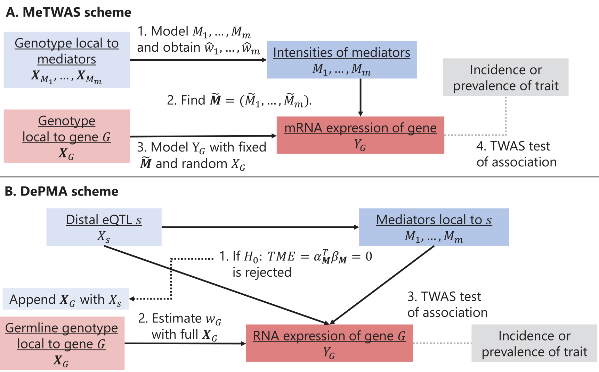

For a full vignette on using MOSTWAS, click here.
TWAS are techniques that were concurrently created by Gamazon et al, 2015 and Gusev et al, 2016 to leverage eQTLs to identify gene-trait associations. A traditional TWAS pipeline is as follows:
In training predictive expression models, most TWAS methods (e.g. PrediXcan, FUSION, TIGAR, EpiXcan, etc) focus on local genetic variation around the gene of interest (0.5 to 1 Megabase around the gene). However, Boyle et al, 2017 and Liu et al, 2019 have proposed that up to 70% of gene expression can be attributed to distal variation in the genome, suggesting that the inclusion of these distal variants in TWAS models may improve prediction and power to detect gene-trait associations.
For this reason, we have developed Multi-Omic Strategies for TWAS (MOSTWAS), an intuitive suite of tools to prioritize distal variants in transcriptomic prediction and conduct TWAS-like association testing using GWAS summary statistics. MOSTWAS incorporates two methods to include distal-eQTLs in transcriptomic prediction: Mediator-enriched TWAS (MeTWAS) and distal-eQTL prioritization via mediation analysis (DePMA). These methods are summarized graphically below.

MeTWAS first identifies m mediators (e.g. CpG sites, miRNAs, gene coding for transcription factors, etc) such that the intensity (methylation or expression levels) of these mediators are associated to the mRNA expression. A model for the genetically regulated intensities (GRIn) is estimated using the local SNPs to these mediators, and the GRIn of these mediators are imputed into the training set. The final gene expression model is estimated by incorporating the GRIn of the mediators as fixed effects and the local SNPs to the gene as regularized effects (see Methods for more details).
DePMA first identified testing triplets of the gene of interest, a distal eSNP (SNP in an eQTL) to the gene, and any associated mediators local to the eQTL. We estimate the total mediation effect (TME) of the eQTL on the gene through the set of mediators and test the two-sided hypothesis that TME = 0. Any distal-eSNP with a significant TME is included with the SNPs local to the gene of interest to form the final design matrix. A model including all local SNPs and all significant distal-eSNPs is fit to the expression of the gene using either elastic net or linear mixed modeling (see Methods for more details).
All MOSTWAS models output:
We recommend training genes with both MeTWAS and DePMA and prioritizing for association testing the model with better cross-validation performance.